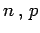

Poisson-Verteilung
Die Verteilung einer diskreten Zufallsveränderlichen  , bei der
, bei der
ist, heißt POISSON-Verteilung mit den Parametern  . Es gilt:
. Es gilt:
- 1. Erwartungswert und Streuung:
-
- 2. Summe von POISSON-verteilten Zufallsgrößen:
- Sind X1 und X2 unabhängige, POISSON-verteilte Zufallsveränderliche mit den Parametern
 bzw. , so ist auch X = X1 + X2 eine POISSON-verteilte Zufallsveränderliche mit dem Parameter .
bzw. , so ist auch X = X1 + X2 eine POISSON-verteilte Zufallsveränderliche mit dem Parameter .
- 3. Rekursionsformel:
-
- 4. Zusammenhang zwischen POISSON- und Binomialverteilung:
- Die POISSON-Verteilung geht aus einer Folge von binomialverteilten Zufallsveränderlichen Xn mit den Parametern  durch den Grenzübergang
 hervor, wenn man mit n so variiert, daß bleibt. Für kann die Binomialverteilung mit im allgemeinen ausreichender Genauigkeit durch die POISSON-Verteilung ersetzt werden, deren Auswertung einfacher ist. Zahlenwerte für die POISSON-Verteilung enthält die Tabelle POISSON-Verteilung. In der folgenden Abbildung sind drei POISSON-Verteilungen für und 0,5 dargestellt. Die Parameter entsprechen den Parametern der anschließend zum Vergleich dargestellten drei Binomialverteilungen und drei hypergeometrischen Verteilung.
hervor, wenn man mit n so variiert, daß bleibt. Für kann die Binomialverteilung mit im allgemeinen ausreichender Genauigkeit durch die POISSON-Verteilung ersetzt werden, deren Auswertung einfacher ist. Zahlenwerte für die POISSON-Verteilung enthält die Tabelle POISSON-Verteilung. In der folgenden Abbildung sind drei POISSON-Verteilungen für und 0,5 dargestellt. Die Parameter entsprechen den Parametern der anschließend zum Vergleich dargestellten drei Binomialverteilungen und drei hypergeometrischen Verteilung.


- 5. Anwendungen
- (s. auch POISSON-Prozesse): Durch die POISSON-Verteilung lassen sich z.B. beschreiben: Anzahl der Kunden, die in einem bestimmten Zeitintervall einen Laden betreten; Anzahl der Druckfehler in einem Buch; Rate der radioaktiven Zerfälle.